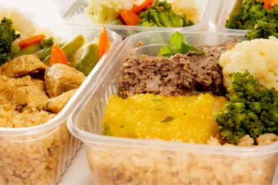
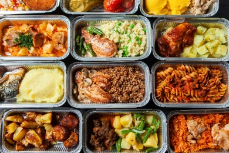
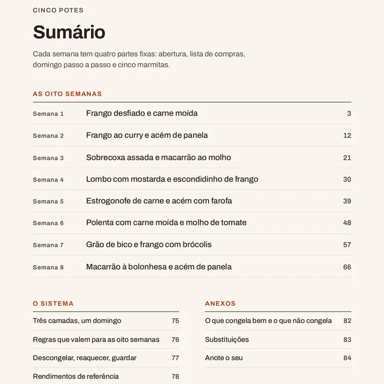
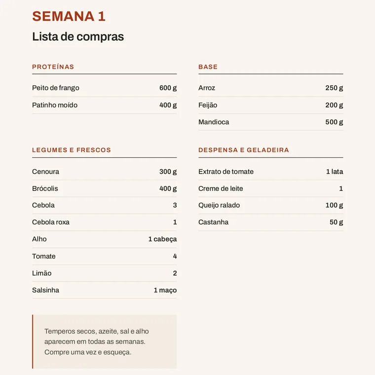
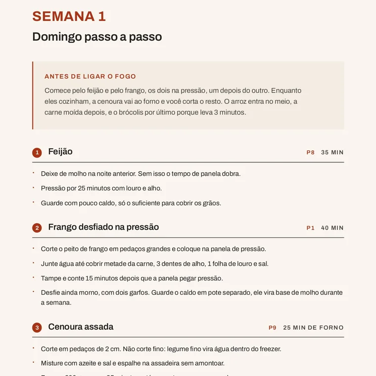
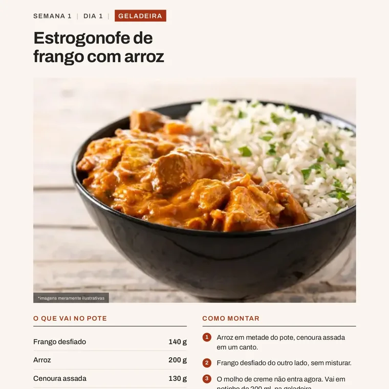
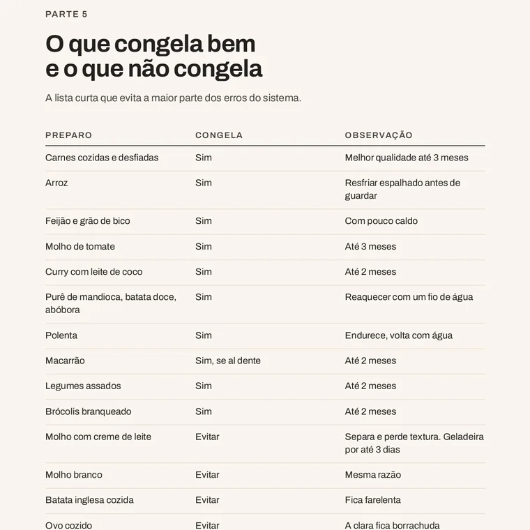
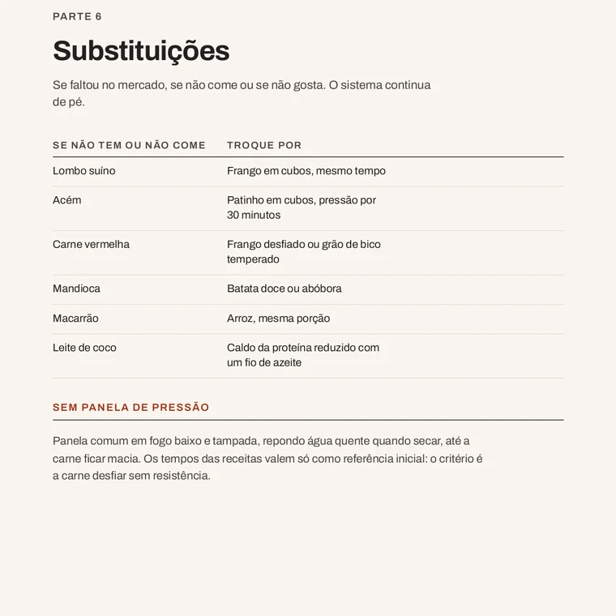

40 almoços planejados para 8 semanas.
Você prepara uma vez por semana e já deixa os próximos 5 almoços encaminhados, com lista de compras e passo a passo.
- 8 semanas
- 40 almoços
- 8 listas de compras
- passo a passo
Acesso imediato 7 dias de garantia

Cansado de decidir o que comer todos os dias?
- Abrir a geladeira sem ideia do que cozinhar.
- Perder tempo fazendo comida no meio da semana.
- Comprar ingrediente sem plano e ver metade estragar.
O Cinco Potes organiza tudo antes da semana começar.
Você escolhe uma das 8 semanas, faz o preparo do domingo seguindo o passo a passo e deixa os almoços dos próximos dias organizados.
- Escolha a semana
- Compre
- Prepare
- Guarde
- Coma
O que você recebe
Tudo já planejado, semana por semana.
- 40 almoços planejados 5 por semana
- 8 semanas completas dois meses de rotação
- 8 listas de compras por setor do mercado
- 8 preparos de domingo na ordem certa das panelas
- 12 preparos-base a receita de cada um
- 3 guias de apoio congelar, substituir, reaquecer
Cada marmita vem com o que vai no pote, quanto vai de cada coisa, se ela fica na geladeira ou no congelador e como reaquecer no dia.

Por dentro do material
Páginas reais do que você recebe.






Arraste para ver as páginas.
Como funciona na prática
-
 1. Escolha a semana Abra uma das 8 semanas e veja os cinco almoços já definidos.
1. Escolha a semana Abra uma das 8 semanas e veja os cinco almoços já definidos. -
 2. Faça as compras Leve a lista da semana, organizada por setor do mercado.
2. Faça as compras Leve a lista da semana, organizada por setor do mercado. -
 3. Siga o preparo de domingo A sequência diz o que entra em cada panela e quando.
3. Siga o preparo de domingo A sequência diz o que entra em cada panela e quando. -
 4. Monte e armazene Cada pote vem marcado como geladeira ou congelador.
4. Monte e armazene Cada pote vem marcado como geladeira ou congelador. -
 5. Almoce Aqueça pela instrução da página e os 5 almoços estão resolvidos.
5. Almoce Aqueça pela instrução da página e os 5 almoços estão resolvidos.
8 semanas de almoço já planejadas.
Material digital · Acesso imediato · Seu para sempre
-
8 semanas com 40 almoços planejados
-
8 listas de compras por setor do mercado
-
8 preparos de domingo passo a passo
-
12 preparos-base com a receita de cada um
-
Guia de congelamento e armazenamento
-
Substituições e guia de reaquecimento
R$ 37,90
Pagamento único no Pix ou em até 12× de R$ 3,92 no cartão.
Acesso imediato · 7 dias de garantia
- Pagamento seguro
- Acesso imediato
7 dias para testar sem risco.
Compre, abra o material e faça a primeira semana. Se não servir para a sua rotina, escreva para o suporte dentro de 7 dias e devolvemos o valor integral.
Perguntas antes de comprar
Como recebo o material?
Assim que o pagamento é confirmado você recebe o acesso por e-mail. Dá para usar no celular, no tablet ou imprimir.
É PDF?
Sim. É um PDF de 84 páginas, com as 8 semanas e os anexos de preparos-base, congelamento e substituições.
Quantas refeições são?
40 almoços: 5 por semana, durante 8 semanas.
Serve para quantas pessoas?
As quantidades são calculadas para 1 pessoa, e o material traz orientação para dobrar as porções.
Preciso cozinhar tudo no mesmo dia?
Domingo é a sugestão, mas a sequência funciona em qualquer dia. Há também a variação em dois blocos menores, se preferir dividir o preparo.
Posso substituir ingredientes?
Sim. A tabela de substituições lista por o que trocar cada proteína e cada acompanhamento, sem alterar o plano da semana.
Como funciona o congelamento?
Cada marmita vem marcada como geladeira, congelador ou montar no dia. Há ainda uma tabela com o que congela bem, o que evitar e o prazo de cada preparo.
Tenho acesso por quanto tempo?
O acesso é vitalício. O arquivo fica com você e pode ser baixado quantas vezes quiser.
Existe garantia?
Sim, 7 dias. Se não servir para a sua rotina, é só escrever para o suporte e devolvemos o valor integral.
Pare de decidir o almoço todos os dias.
Tenha 8 semanas de refeições planejadas por R$ 37,90.
QUERO AS 8 SEMANASAcesso imediato 7 dias de garantia